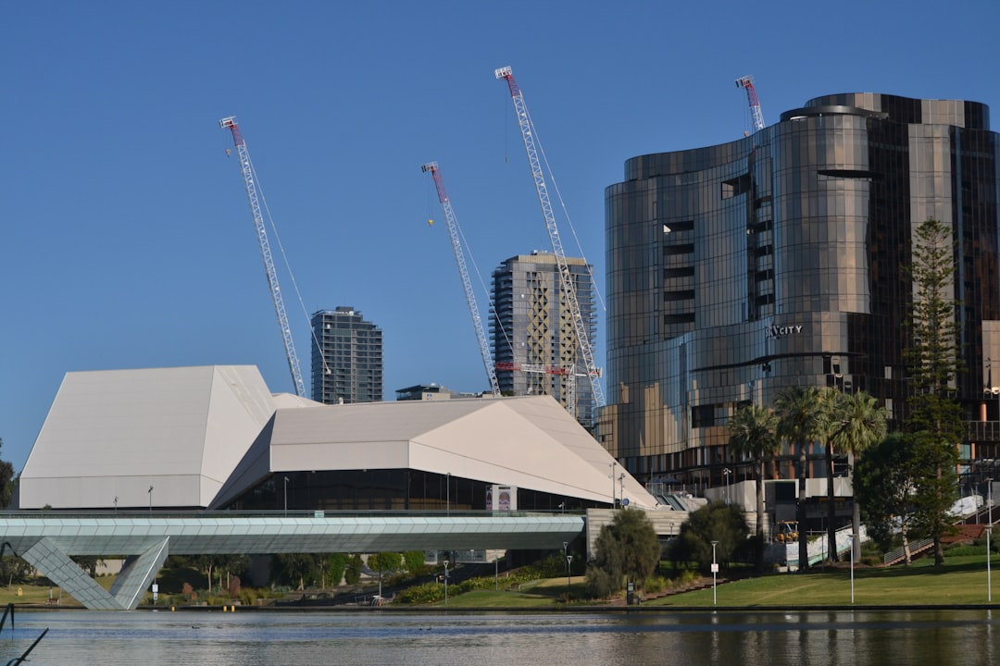

For Adelaide earthworks, the useful answer is scope first, machine second. The source guide separates six work types: site cuts and foundations, trenching and drainage, clearing and preparation, soil removal and cartage, driveway or shed pad preparation, and pool or tight-access excavation. Small backyard excavation may involve only a day or two of machine time when access and soil are straightforward, but approvals, buried services, spoil and written inclusions decide the real next step.
For homeowners and builders comparing earthmoving contractors adelaide options, the practical starting point is the site outcome, access, ground conditions, buried services and spoil plan.
Earthmoving Contractors Adelaide Explained
Earthmoving Adelaide frames earthworks around the intended result: a building pad, service trench, driveway base, shed pad, pool dig, cleared site or cartage task. That is a more useful brief than asking for a machine by name, because the same plant can be suitable or unsuitable depending on levels, ground, access and disposal.
A good enquiry explains what needs to exist after the job is finished. For a house site or extension, that may mean a survey-led preparation area and known building levels. For trenching, it may mean a service route or stormwater shaping that avoids known assets. For driveway construction or hardstand work, the contractor needs to understand excavation depth, grading, base preparation and whether cartage is included.
Before asking for contractor contact, prepare a short scope with:
- the suburb or postcode and the intended finished use
- approximate dimensions, depth and levels if known
- photos, plans or sketches that show access and nearby structures
- known ground conditions such as sand, clay, fill or rock
- whether spoil, rubble or unsuitable surface material must leave site
Access Checks That Change The Job
Access is more than gate width. The published guide calls out turns, overhead clearance, surfaces and the loading route because each one can change plant choice and cartage assumptions. A backyard dig with a wide gate but a tight turn can still need compact equipment. An established property with overhead obstructions may need a different approach from an open block.
For older or tighter Adelaide properties, the issue is not only whether a machine fits. Smaller equipment can mean more passes, different loading arrangements and more trips to remove spoil. The source guide notes that small backyard excavation may have only a day or two of actual machine time when access and soil are straightforward, but tight laneways and limited access can add time.
Useful access notes include exact entry width, turning space, driveway surface, slope, overhead lines or branches, and the nearest practical loading position. Photos taken from the street, side access and work area are often more useful than a long written description.
Ground, Spoil And Written Inclusions
Ground conditions are a cost and method question. The Adelaide guide names sand, reactive clay, fill and rock as conditions that can affect plant, stability, time and disposal assumptions. It also separates excavation, cartage, materials, testing, approvals and downstream trade responsibilities, which helps stop a quote from looking complete when important tasks sit outside it.
Soil removal and cartage deserve a separate line in the conversation. Clean spoil, rubble and excavated material may need different handling, and the question is whether loading, separation and lawful cartage are included. For land clearing and site preparation, ask whether vegetation, debris and unsuitable surface material are included or whether another trade or service must deal with part of the site.
If the job involves a building pad, shed pad, driveway or retaining preparation, ask how finished levels will be confirmed and who is responsible for compaction, testing or follow-on trade requirements. The source page makes clear that engineering, approvals, contractor selection and the final written quote remain separate decisions.
Approvals, Services And Licence Questions
Buried services should be checked with current asset information and site-specific locating before excavation starts. That applies to trenching and drainage, foundations, pool excavation and general site clearing. The practical question for the owner is whether service information has been gathered, who is arranging locating, and how the contractor will respond if unknown services are found.
Approval is also scope dependent. The source guide says a small-looking excavation is not automatically exempt in South Australia, and recommends checking with the relevant council or PlanSA where earthworks could affect neighbouring land, retaining walls, stormwater, protected features or form part of building work. That is especially relevant where excavation changes levels or supports a later construction stage.
Licence checks should match the contracted work. The guide says there is no single generic earthmover licence that applies to every excavation task, while pool excavation can involve regulated building work, engineering, approvals and licensed trades. For contracted building work, the source directs readers to Consumer and Business Services SA to verify any building-work contractor licence required for that scope.
Who This Applies To
This guide is for property owners, builders and project organisers who need a clearer earthworks brief before speaking with a contractor. It is most useful for residential earthmoving Adelaide tasks such as site cuts, foundations, trenching, drainage excavation, driveway bases, shed pads, pool excavation, tight-access jobs, land clearing and soil cartage.
It also helps compare local earthmoving services when the job is small but awkward. A garden terrace, deck footing area, courtyard pool or narrow side access can involve more planning than the size suggests. The earthmoving services Adelaide guide is a useful companion when the question is broader service selection rather than contractor comparison.
The guide is not a substitute for engineering, council advice, building approval, contractor selection or a written quote. It is a practical checklist for turning a vague request into a scope that can be reviewed.
- Define the result. Write the finished use first, such as building pad, trench, driveway base, shed pad, pool dig, cleared site or cartage.
- Measure access. Record gate width, turns, overhead clearance, surface condition and the loading route before requesting contact.
- Describe ground and spoil. Note whether the site appears to involve sand, clay, fill, rock, rubble, vegetation or material that must be carted away.
- Separate responsibilities. Ask which parts of excavation, cartage, materials, testing, approvals and downstream trade work are included in writing.
- Check approvals and services. Use council or PlanSA questions and site-specific service locating where the work may affect assets, drainage, retaining or building work.
| Question | Why it matters | What to prepare |
|---|---|---|
| What is the finished outcome? | Plant choice follows the required result, not just the machine name. | Plans, photos, dimensions and intended use. |
| Can equipment reach the work area? | Width, turns, overhead clearance and loading route can change method. | Access measurements and photos from entry to work zone. |
| What ground is expected? | Sand, clay, fill and rock can affect time, stability and disposal assumptions. | Known soil notes, prior excavation observations and site photos. |
| Who handles spoil? | Excavation and lawful cartage may be separate inclusions. | Expected material type and whether removal is required. |
| Are approvals or services involved? | Earthworks can affect stormwater, retaining, neighbouring land or buried assets. | Council or PlanSA questions, service information and locating plan. |
Common questions
How should I brief an Adelaide earthmoving contractor? Start with the finished outcome, approximate dimensions, access measurements, known ground conditions, plans, photos and whether spoil must be removed. The source guide says this gives the first review more useful facts.
Can a small backyard excavation be quick? Yes, the published guide says the actual machine time for a small deck, shed pad or garden terracing job is often only a day or two if access is straightforward and the soil is not rock. Limited access can add time.
Do earthworks always need council approval in Adelaide? No single answer applies. The source guide says approval depends on the property, planning rules and proposed work, and recommends checking with council or PlanSA where impacts may involve neighbouring land, retaining, stormwater, protected features or building work.
Is there one licence for every excavation task? The supplied guide says there is no single generic earthmover licence for every excavation task. Check the exact scope, and verify any required building-work contractor licence through Consumer and Business Services SA where that applies.
This guide covers practical Adelaide earthworks scoping before contractor contact, including access, ground, spoil, services, approvals and quote inclusions.